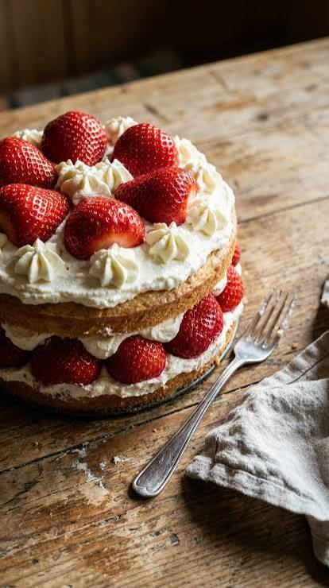
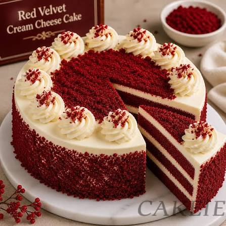
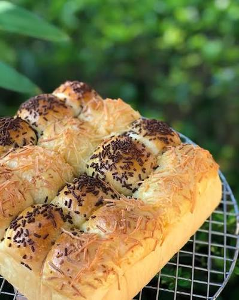
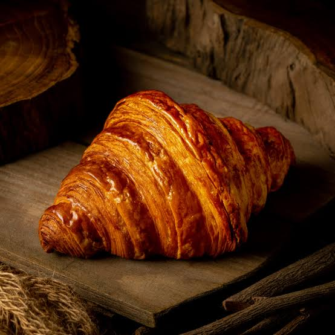
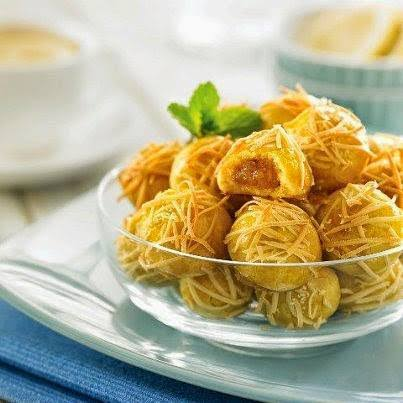
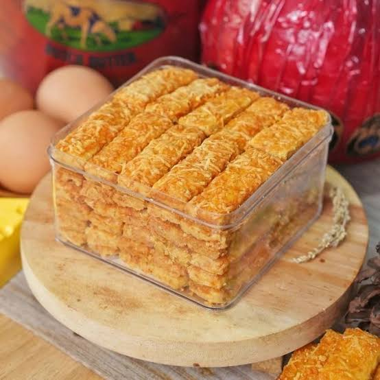
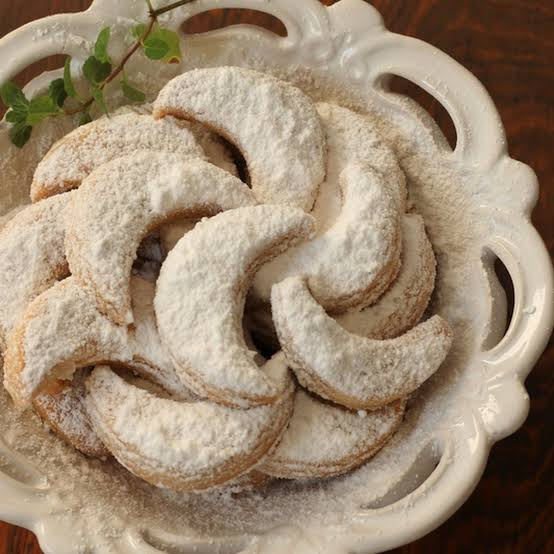

Classic Chocolate Ganache
Bolu cokelat lembut tiga lapis dengan isian krim cokelat hitam pekat dan hiasan buah ceri segar.
Mulai Rp 185.000Pilihan kue ulang tahun, roti segar harian, dan aneka kue kering buatan dapur kami setiap hari.
Bolu cokelat lembut tiga lapis dengan isian krim cokelat hitam pekat dan hiasan buah ceri segar.
Mulai Rp 185.000
Kue spons vanila ringan dengan krim susu segar dan potongan buah stroberi pilihan di setiap lapisan.
Mulai Rp 195.000
Perpaduan tekstur bolu cokelat merah yang lembut dengan balutan krim keju gurih manis.
Mulai Rp 210.000
Roti manis empuk dengan isian selai cokelat lumer dan taburan keju cheddar parut yang melimpah.
Rp 28.000
Pastry berlapis yang renyah di luar dan lembut di dalam menggunakan mentega asli berkualitas.
Rp 18.000
Roti tawar sehat berbahan tepung gandum utuh tanpa pengawet, cocok untuk menu sarapan pagi.
Rp 22.000
Kue kering lembut dengan isian selai nanas madu buatan sendiri yang dimasak hingga harum.
Rp 65.000 / toples
Kue kering renyah dengan cita rasa gurih dari campuran keju edam dan keju cheddar panggang.
Rp 70.000 / toples
Kue kering renyah dengan campuran kacang mete panggang dan balutan gula halus yang dingin di mulut.
Rp 60.000 / toples